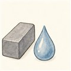

だい3わ ── 燃料の章かたい燃料、ながれる燃料
ロケットの燃料には、大きくふたつの流儀があります。酸化剤ごと固めた塊に直接火をつける固体と、タンクからポンプでくみ上げて燃やす液体。H3ロケットはこの両方を使う欲張りな構成で、真ん中の液体エンジン（LE-9）のわきに、固体ブースタ（SRB-3）を注文に合わせて2本・4本とたすき掛けにします（軽い衛星なら付けない形態も）。
固体ロケットは、いわば巨大で精密な花火です。酸化剤（過塩素酸アンモニウム）とアルミ粉の燃料を、自身も燃料を兼ねるゴム系のつなぎ（HTPB）で練り固めた塊——グレイン——が筒に詰まっていて、点火すると内側の穴の表面がいっせいに燃え広がります。ポンプも配管もいらない。何年でも保管できて、火をつければ数秒とかからず全力。そのかわり、一度つけた火は止められないし、加減もできません。
いっぽう液体ロケットは精密機械です。タンク・ポンプ・配管・バルブを従えて、燃焼室に推進剤を送り込む。部品は多く、極低温の推進剤は打上げ直前まで注ぎ足しが要る。そのかわり、設計しだいで火力の加減（スロットル）も再点火もできて、水素系なら比推力もぐっと高い。第2話の表を思い出してください——固体の250〜280秒に対して、水素の液体は420〜450秒級でした。
だから使い分けはこうなります。離陸の力仕事は、安くて力持ちの固体に（SRB-3は1本で約2,300kN——LE-9の約1.5倍——を約110秒間）。その先の効率と繊細な制御は液体に。第1話の「量の勝負と速さの勝負」が、燃料の選び方にもそのまま現れています。
ところで固体は「加減できない」と言いましたが、じつは設計の段階でなら、火力の脚本を書けます。グレインの穴の形を変えると、燃える表面積の増え方が変わるからです。
よりみちなぜ固体は比推力で負けるのか
第2話で、投げる速さは「温度が高いほど・分子が軽いほど」速くなると言いました。固体の排気には、アルミの燃えかす（酸化アルミニウム）や塩化水素など重たい分子や粒がたくさん混ざります。しかも固体粒子は膨張で加速しきれず、速度のロスにもなる。軽い水蒸気（分子量18）を投げる水素エンジンとは、ここで差がつきます。SRB-3の283.6秒とLE-9の422秒。この開きの主因が投げているものの「重さ」で、そこに燃焼温度の違いや、粒が加速しきれない二相流の損も上乗せされます。それでも固体が選ばれ続けるのは、推力あたりの値段と手間で圧勝だから。エンジンは適材適所です。
よりみち三番目の流儀たち — 貯蔵性液体とハイブリッド
じつは液体にも「花火寄り」の一派があります。四酸化二窒素とヒドラジン系燃料の組み合わせは、触れただけで勝手に着火（ハイパーゴリック）し、常温で何年も貯蔵できる。点火器いらずで確実に着くので、人工衛星や宇宙船のエンジンの定番です（毒性が強いのが玉にきず）。もうひとつ、固体の燃料に液体の酸化剤を吹き込むハイブリッドロケットという折衷案もあり、止められる固体として研究が続いています。
 流体屋のためのノート
流体屋のためのノート
固体の質量流量は ṁ = ρ·Ab·r で決まります。ρ は推進薬密度、Ab は燃焼面積、r は燃焼速度。そして r は室圧の関数 r = a·pn（サン・ロベールの法則）。つまり固体モータは「ポンプが流量を決める」世界ではなく、幾何（燃焼面積の推移）と圧力フィードバックが流量を決める世界です。単純な準定常モデルでは、指数 n が1未満なら圧力擾乱は自己減衰（静的安定）、1を超えると暴走——ただしこれだけで音響的な燃焼不安定まで安心できるわけではありません。ここが内部弾道学の入口。第5話からは逆に、流量を機械で支配する世界（ターボポンプ）に入ります。
{kind=link}
・G. P. Sutton & O. Biblarz, Rocket Propulsion Elements, 9th ed., ch.12–13
・JAXA SRB-3 諸元（最大推力 約2,300kN・比推力283.6秒以上・燃焼 約110秒・推進薬66.8t）
・NASA Glenn Research Center, 固体ロケット解説（パブリックドメイン）